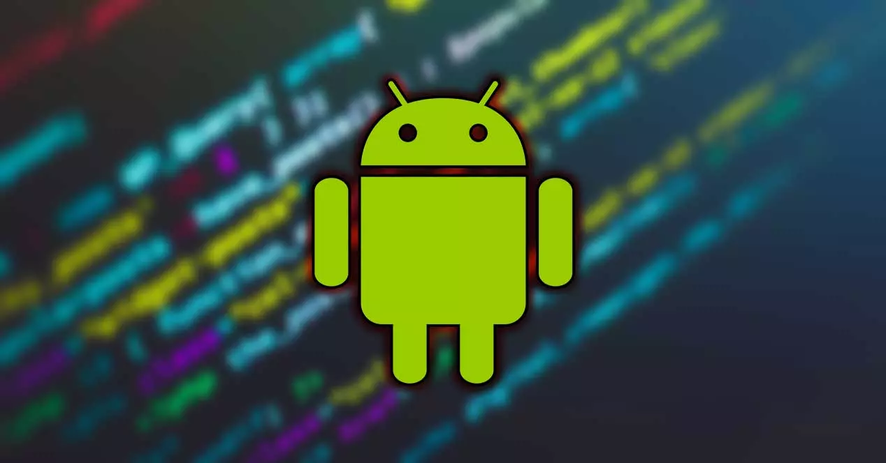

Sistema Operativo Android
Introducción
El objetivo del presente blog es realizar un análisis detallado del sisetma operativo Android, evaluando sus características, ventajas, y desventajas. Se busca ofrecer una visión comprensiva que permita a los usuarios comprender las diferencias clave entre Android y otros sistemas operativos, facilitando una elección informada para distintos usos tecnológicos.
Breve Reseña Histórica
Fundación y Adquisición (2003-2005)
Android Inc. fue fundada en 2003 por Andy Rubin y su equipo, inicialmente como un sistema operativo para cámaras digitales, pero luego se enfocó en teléfonos inteligentes. Google adquirió la empresa en 2005, iniciando el desarrollo de un sistema operativo de código abierto basado en Linux.
Lanzamiento del Primer Dispositivo (2008)
El HTC Dream (T-Mobile G1), lanzado en octubre de 2008, fue el primer dispositivo en utilizar Android, introduciendo su interfaz y ecosistema de aplicaciones.
Versiones Iniciales (2008-2010)
Las versiones 1.0 y 1.1 establecieron las bases del sistema. Android 1.5 Cupcake introdujo el teclado en pantalla, mientras que la versión 2.0 Eclair trajo consigo la navegación GPS, y Android 2.2 Froyo mejoró significativamente la velocidad del sistema.
Innovaciones (2011-2013)
Android 3.0 Honeycomb se centró en mejorar la experiencia en tablets. La versión 4.0 Ice Cream Sandwich unificó la experiencia entre dispositivos móviles y tablets, mientras que la versión 4.4 KitKat optimizó el sistema para funcionar mejor en dispositivos de gama baja.
Mejoras Continuas (2014-2022)
Android 5.0 Lollipop presentó el nuevo lenguaje de diseño "Material Design". Posteriormente, Android 10 introdujo el modo oscuro y mejoras en privacidad, mientras que Android 12 rediseñó la interfaz con "Material You". Android 13 se enfocó en la personalización y mejores controles de privacidad.
Reciente (2023)
Android 14 ha mejorado la duración de la batería y la seguridad, con un enfoque en inteligencia artificial y la conectividad 5G, preparando el camino para nuevas experiencias en aplicaciones y mayor eficiencia.
Detalles del Sistema Operativo
Figura No. 1. Sistema operativo Android.
Fuente: bepohE (2023), Masterhacks.net
Requerimientos del Sistema Operativo Android
1. Requerimientos de Hardware
- Procesador: Compatible con ARM, ARM64, x86 o x86_64.
- Memoria RAM:
- Para versiones Android 10 y superiores, se recomienda un mínimo de 2 GB de RAM para un rendimiento adecuado.
- Versiones anteriores, como Android 8 o 9, pueden funcionar con al menos 1 GB de RAM.
- Almacenamiento Interno:
- Mínimo de 8 GB de almacenamiento interno, aunque los dispositivos modernos suelen tener 32 GB o más.
- Algunas versiones más ligeras pueden funcionar con 4 GB de almacenamiento.
- Pantalla: Tamaños a partir de 3.5 pulgadas en adelante.
- Conectividad:
- Wi-Fi (802.11 b/g/n/ac)
- Bluetooth (versión 4.0 o superior)
- Soporte para redes móviles (2G, 3G, 4G, y 5G en dispositivos más recientes)
- Batería: Baterías de al menos 3000 mAh.
- Cámara y Sensores: Cámaras de múltiples megapíxeles y sensores como giroscopios, acelerómetros y brújulas digitales.
2. Requerimientos de Software
- Kernel de Linux: Requisito fundamental para ejecutar Android.
- Soporte para aplicaciones de 32 y 64 bits: Compatibilidad con una amplia variedad de aplicaciones.
- OpenGL ES o Vulkan: Soporte gráfico avanzado para renderización en 2D y 3D.
- Framework de seguridad: Soporte para las últimas medidas de seguridad, incluyendo encriptado de datos y permisos de usuario.
3. Requerimientos Adicionales
- Google Play Services: Requisito para acceder a las aplicaciones y servicios de Google.
- Actualizaciones de seguridad y software: Android requiere un sistema de gestión de actualizaciones para evitar vulnerabilidades.
Comparación con otros sistemas operativos
| Características | Android | iOS | Linux Fedora |
|---|---|---|---|
| Código | Abierto | Cerrado | Abierto |
| Interfaz | Personalizable y variada | Uniforme y consistente | Varía (GNOME, KDE) |
| Actualizaciones | Fragmentadas, dependen del fabricante | Rápidas y constantes | Regulares, pero pueden ser inestables |
| Seguridad | Vulnerable a malware | Alto nivel de seguridad | Alto nivel de seguridad, menos ataques |
| Calidad de Apps | Varía, muchas gratuitas | Alta calidad, menos opciones | Depende de la comunidad |
| Facilidad de Uso | Puede ser complejo para nuevos usuarios | Intuitivo y fácil de usar | Requiere conocimientos técnicos |
| Comunidad | Amplia y activa | Limitada a usuarios de Apple | Activa, especialmente entre desarrolladores |
| Ventajas | Gran personalización, más apps, acceso a hardware variado | Integración con otros dispositivos, mejor soporte | Control total sobre el sistema, escalabilidad |
| Desventajas | Vulnerabilidades, calidad variable de apps | Menor personalización, costoso | Curva de aprendizaje empinada, menos soporte para juegos |
Video ilustrativo
Video No. 1. La Historia de Android 🤖 De Startup a Gigante de la Tecnología Móvil 🔝.
Fuente: DevExpert - Programación Android y Kotlin YouTube
Integrantes del Grupo
Odeth Arevalo
Al desarrollar este blog, pude comprender más acerca de Android, el cual e sistema operativo flexible y personalizable, con una gran comunidad y adaptabilidad a diversos dispositivos, comparando este sistema con otros como iOS y Linux, Android enfrenta problemas de seguridad y actualizaciones fragmentada, pero también destaca por su código abierto.

Gerardo Vásquez
Gracias a la creación de este blog comprendí mejor la evolución de Android como uno de los grandes líderes en el mercado móvil. Cabe destacar su adaptabilidad en diversos dispositivos y la comparativa entre diferentes SO que detallaban los diversos pros y contras que tiene cada software me ayudó entender cómo cada sistema impacta en la vida de los usuarios.
Fernando Barrios
Haciendo este blog, comprendí que Android ha recorrido un largo camino desde su inicio como un sistema para cámaras digitales hasta convertirse en una plataforma móvil versátil y poderosa. Su evolución ha estado marcada por constantes innovaciones que mejoran la experiencia del usuario y la seguridad.

Kiuriztelys Icaza
Al final, lo que comprendí es que los sistemas operativos son esenciales para que nuestros dispositivos funcionen bien. Cada uno tiene sus fortalezas y debilidades que impactan el rendimiento, la seguridad y la facilidad de uso. Algunos son más rápidos, otros más seguros, o simplemente más fáciles de usar. No hay un sistema perfecto para todos; la elección depende de lo que necesites hacer. Por eso es clave entender qué buscas y elegir el que mejor se ajuste a tus necesidades.

Moisés Betancourt
Para finalizar podemos decir que el sistema operativo Android ha evolucionado significativamente, consolidándose como uno de los sistemas más utilizados en dispositivos móviles gracias a su flexibilidad, personalización y acceso a una amplia variedad de aplicaciones. En este trabajo se han revisado sus inicios y su historia en general, requerimientos técnicos y se ha comparado con otros sistemas como iOS y Windows Phone, destacando sus características y ventajas competitivas.
Profesor: Isaac Esquivel
Institución: Universidad Tecnológica de Panamá
Facultad: Ingeniería en Sistemas Computacionales
Departamento: Programación de Computadoras
Carrera: Lic. Desarrollo de Software
Grupo #2